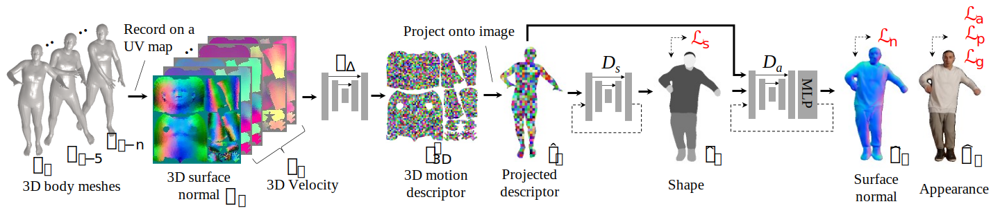

Learning Motion-Dependent Appearance for High-Fidelity Rendering of Dynamic Humans from a Single Camera
Jae Shin Yoon1,2, Duygu Ceylan2, Tuanfeng Y. Wang2, Jingwan Lu2, Jimei Yang2, Zhixin Shu2 and Hyun Soo Park1
1University of Minnesota 2Adobe Research

Abstract
Appearance of dressed humans undergoes a complex geometric transformation induced not only by the static pose but also by its dynamics, i.e., there exists a number of cloth geometric configurations given a pose depending on the way it has moved. Such appearance modeling conditioned on motion has been largely neglected in existing human rendering methods, resulting in rendering of physically implausible motion. A key challenge of learning the dynamics of the appearance lies in the requirement of a prohibitively large amount of observations. In this paper, we present a compact motion representation by enforcing equivariance---a representation is expected to be transformed in the way that the pose is transformed. We model an equivariant encoder that can generate the generalizable representation from the spatial and temporal derivatives of the 3D body surface. This learned representation is decoded by a compositional multi-task decoder that renders high fidelity time-varying appearance. Our experiments show that our method can generate a temporally coherent video of dynamic humans for unseen body poses and novel views given a single view video.
System Overview

Results
|
|
|
Application
|
Bullet time effect & novel view synthesis |
Motion Transfer |
Relighting |
Paper
Jae Shin Yoon, Duygu Ceylan, Tuanfeng Y. Wang, Jingwan Lu, Jimei Yang, Zhixin Shu, and Hyun Soo Park "Learning Motion-Dependent Appearance for High-Fidelity Rendering of Dynamic Humans from a Single Camera", CVPR 2022 [PDF, Bibtex]
Video